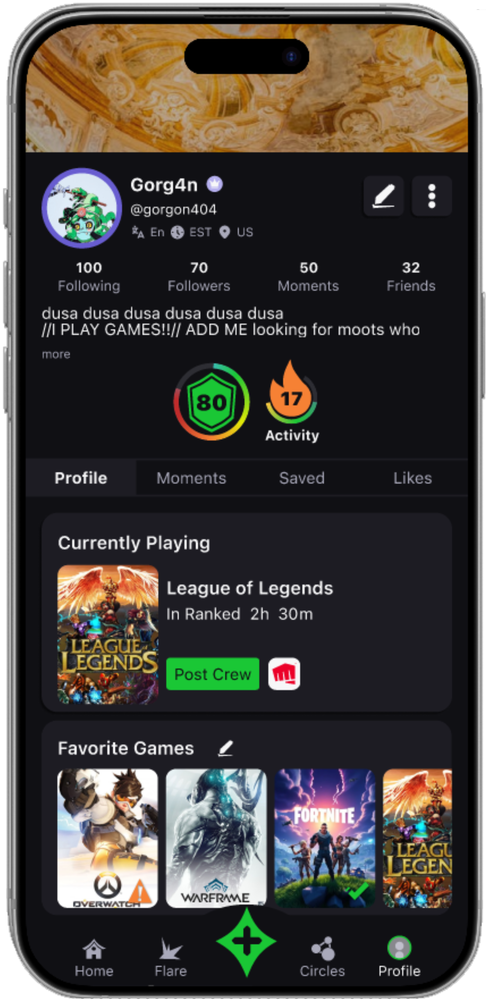

Clikd is a desktop + mobile gaming
communication app
that connects players with their communities.
Lean UX
UX/UI Designer
Prototyping & Testing
Figma
Figjam

iterativly blah blah, weekly stand ups, continous intergration - back end was built before design started - kanban boards - mvp's minimum viable product
assumptions (users need to easily find people to play, will increase active users) - users need to be able to form groups, recurring drops - increases user retention - connecting and displaying stats from players games will encourage connecting accounts - users will need to access different features at the same time (i.e. scroll feed while waiting for a drop to start or search flares while chatting with friends) therefore making the desktop features modular will provide the easiest mode of use - whereas on mobile, all features are easily accessable through the nav bar and should hold previous location
MVP: the minimum viable product for our app will allow users to post, communicate, form groups, and join games.
designing one feature at a time, i started with a userflow for that feature to quicklky explore the users path and determine what pages were neccessary for that feature.
i then designed lofi prototypes for the feature - shared with the team - recived feedback and either made adjustments or moved on to hifi, prototyping, and testing.Working mobile first and adapting to desktop.

The first feature is the "flare," users signal they're looking for teammates, and the system matches them with compatible players based on game, rank, role, region, trust, and social proximity. requirements are:


The second required feature was Drops, ephemeral gaming sessions with voice, video, screenshare, and chat.

Share game clips and highlights, powered by an Interest Graph algorithm, users discover content based on interests that the algorithm learns from real-time behavior, not just what their friends post.


Ephemeral gaming session system: voice, video, screenshare, chat in one room. When everyone leaves or the host ends it, everything is deleted. No chat history, no permanent recordings, no clutter. Clean slate.

A persistent named group of friends with integrated chat, shared content, and one-tap voice/video drops.


Clikd App @ clikd.com • Character art by William Campbell @rotaryphoam